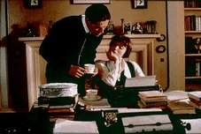

Tom & Viv
I have not had a chance to see this 1994 movie, but from what I have
read the movie details the relationship between Eliot and his wife. James Jamison
(jjamison@slip.net), graciously sent me this review:
Maurice Haigh-Wood given a major role. Too many patently symbolic scenes illustrative of Eliot's lines e.g., each in his prison, each confirms a prison. Eliot in exalted misery. If I remember correctly, Bertrand Russell was played by Nicholas Grace, Anthony Blanche of "Brideshead Revisited."
Lucidcafé World Wide Web Cafe & Interactive Magazine
The Lucidcafé is a beautiful site devoted to two of my favorite passions, art and coffee. Here you
will find a comprehensive guide to coffee as well as a directory of artists in
virtually every medium.